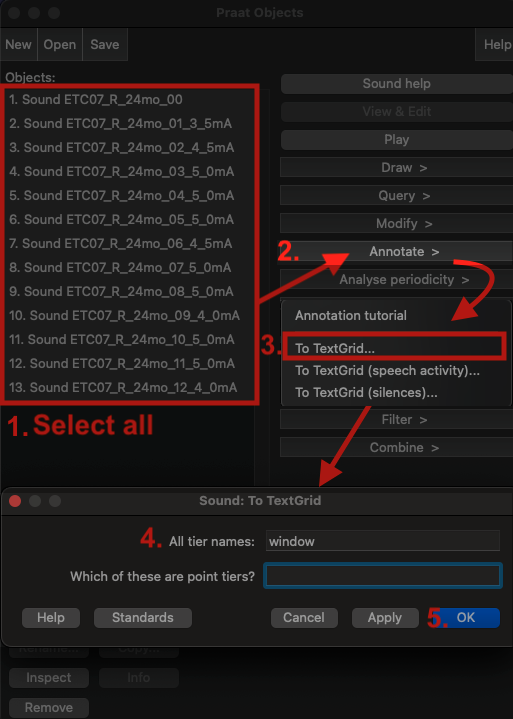
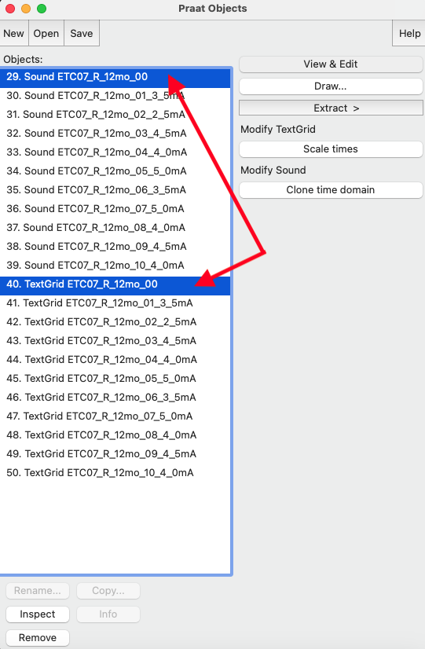
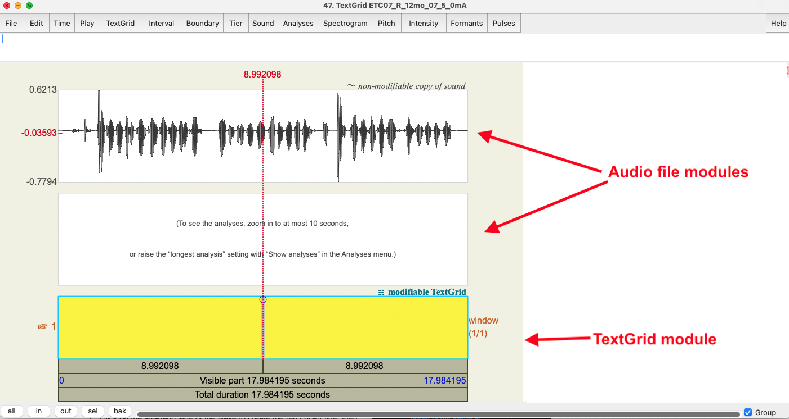
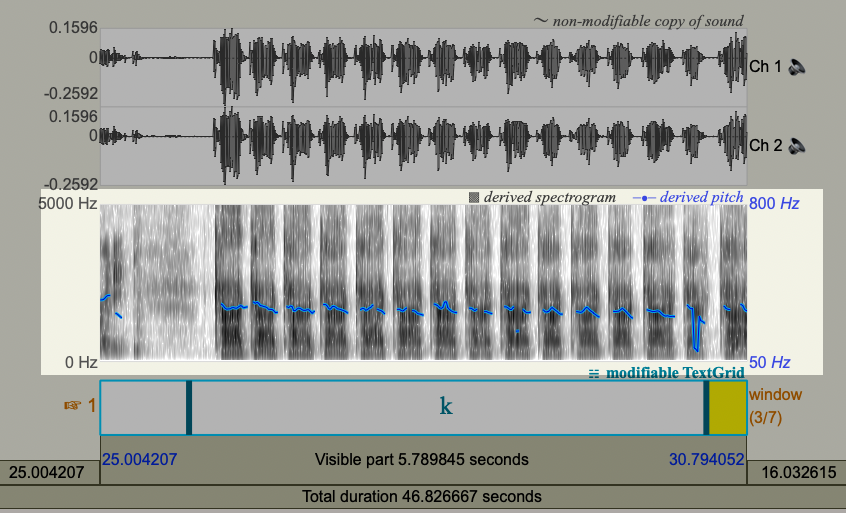
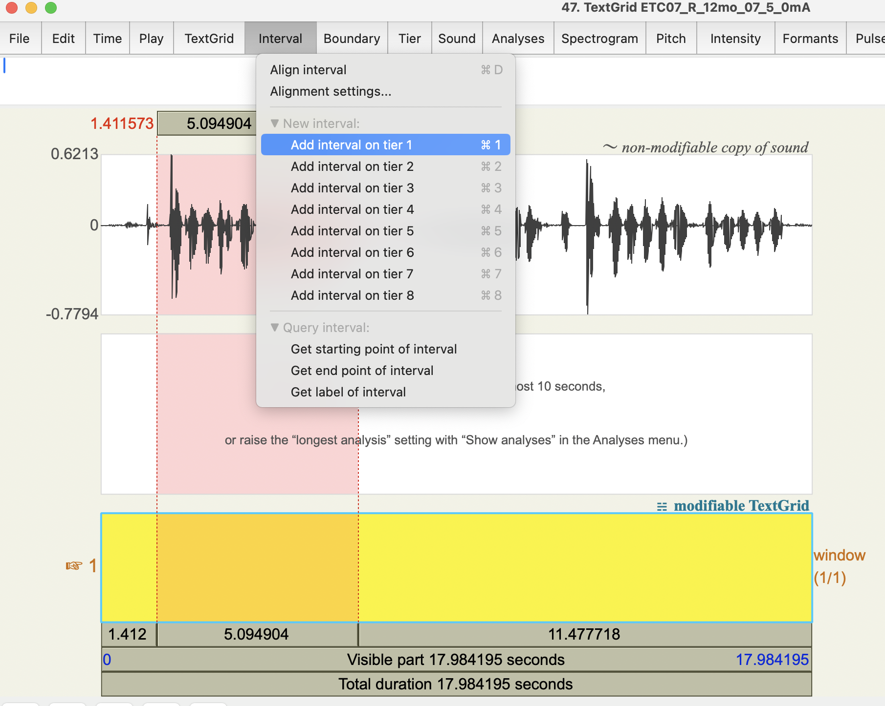
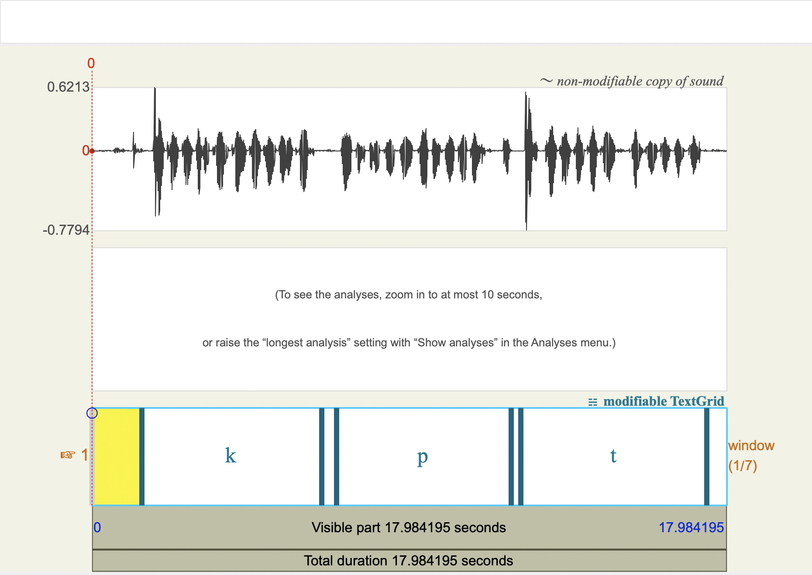
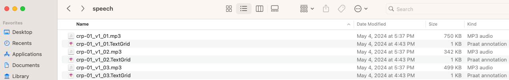

Section 4 Working with Praat
4.1 Loading sound files
Once Praat is installed, you can open the software from the Applications folder. Two windows will open: one for the Praat objects and one for the Praat picture. The objects window is where you will load and manipulate sound files. You can close the picture window as it is not necessary for the pipeline.
In the Praat Objects window, open the MP3 file by going to the top left of the screen and select:
Open → Read from file
Navigate to the folder where the .mp3 audio files are you want to process.
Select as many files as you want to process. You can select multiple files by holding down the shift key and clicking on the files you want to process. Once you have selected the files, click Open. The files will load into the Praat Objects window.
Once the files are loaded, select all of the files by clicking on the first file, holding down the shift key, and clicking on the last file.
Then, go to the right side of the screen and select Annotation → To TextGrid. This will create a TextGrid for each sound file.
A window will pop up asking you to specify tier names and point tiers. You must delete the default value for All tier names to window and leave Which of these are point tiers? empty. Then click OK.
window is the only tier name that will work with the pipeline. If you use a different tier name, the pipeline will not work. Changing tier names is challenging, so it is best to make sure you type window from the start.

4.2 Creating TextGrids
Once the TextGrids are created, you will see a new file for each audio recording in the Praat Objects window. You want to select both the sound file and the TextGrid file for each recording. You can do this by holding down the shift key and clicking on the 2 files you want to select. Make sure that the sound file and the TextGrid file have the same name. A good way to check is to look at the configuration number in the file name. This will be a number between 00 and 15 and is located right after the timepoint (e.g., 12mo_04). If the sound file is ETC07_R_12mo_07_5_0mA, the TextGrid file should be the same.

With both files selected, go to the right side and select View & Edit. This will open a new window with the sound file and the TextGrid file.
4.3 Viewing the files
The top two windows are audio file modules; the top window shows the waveform and the middle window shows the spectrogram. You will need to zoom in further to view the spectogram.
The TextGrid file is located in the bottom window. Off to the right you will see letters and symbols (not shown in screenshot). You can ignore these.

The waveform is helpful for seeing when the syllable begins and ends because it goes from a flat line to a wave and vice versa.
The spectrogram is helpful for fine tuning the beginning and end of the syllable. The tool shows the formants, with the blue line indicating the base formant. Each formant corresponds to a resonance of the vocal tract (frequency at which the vocal folds are vibrating). The formants run horizontal, but when stacked, they look like dark black bands running vertically from the top to the bottom of the spectrogram window.

4.4 Playing the audio file
Click on the left-hand side of the wave in the top window to move the red cursor line. Then click tab. This will play everything to the right of the cursor that is in the playable window.
To listen to a specific part of the audio file, click and drag the mouse over the waveform. Then click tab to play the selected portion.
There should be roughly 10 of each syllable, but listen to the recording to make sure you are analyzing the correct syllables.
4.5 Defining the windows
Each TextGrid should be divided into 7 windows. The order of the windows is as follows:
Cushion
Vowels (ka/)
Cushion
Vowels (ta/)
Cushion
Vowels (pa/)
Cushion
The order could vary if the syllables are not recited in the order ka/ta/pa/. This will not affect the pipeline.
pa/. It’s okay if this window is very short, but it must be present.
The three vowel windows should include all repetitions of each syllable. It is recommended to include a few milliseconds of silence before and after the syllable. This will help the pipeline identify the syllable.
The silence or background noise windows should cushion the vowel windows. There should be at least 4 of these windows.
Avoid overlapping windows. If you have overlapping windows, the pipeline will not work.
To define the windows, click on the waveform and drag the mouse to the right. This will define a window. If the window is too large or too small, click outside of the window and define a new area. To save the window, click Interval → New interval on tier 1.

Once all the windows are defined, select each syllable interval and type either k, t, or p. This will label the interval with the corresponding syllable. Leave the cushion intervals blank.
Below is a screenshot of what the TextGrid should look like when it is complete. Check that in the bottom left you see window (#/7).

4.6 Saving the TextGrid
Before you close the window, save the TextGrid by going to File → Save as text file. Save the file in the same folder as the audio file. The file should have the same name as the audio file with the extension .TextGrid. In order for the pipeline to work, the TextGrid file must be saved in the same folder as the audio file AND have the exact same name as the audio file.
Now, repeat this process for all of the audio files in the folder that you want to analyze.

To top of page ↑